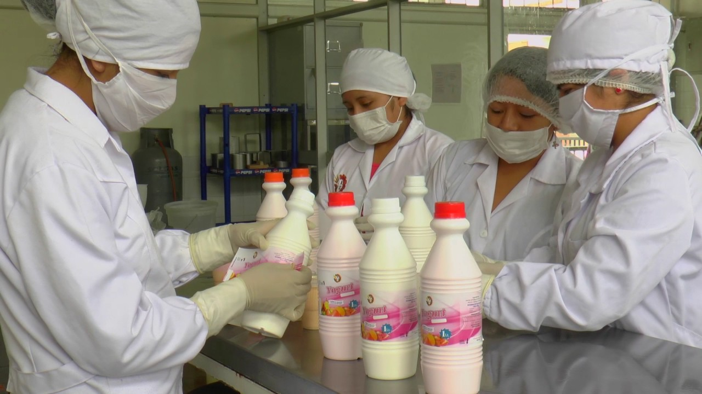
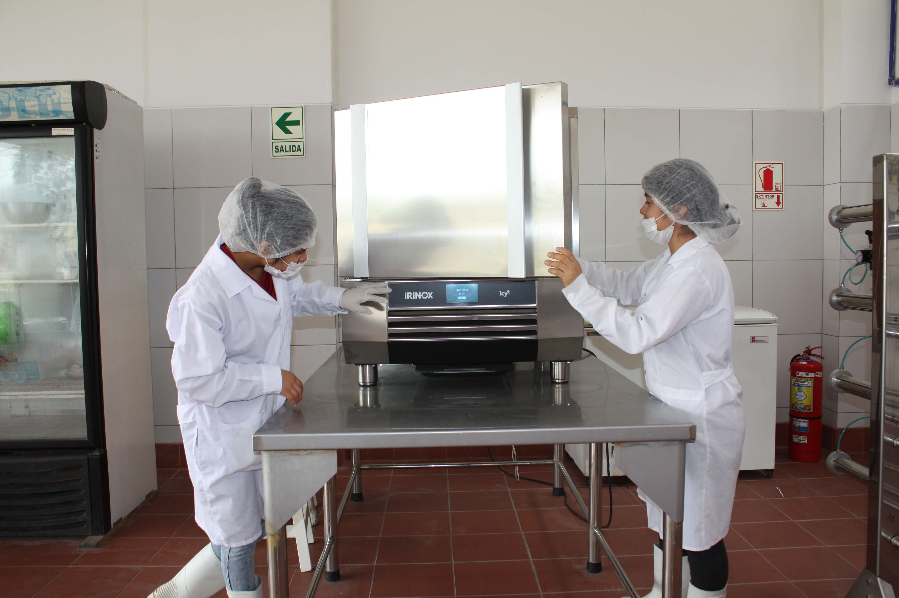

|
Industrias Alimentarias |
|---|
|  |  |
|---|
Títutlo a nombre de la nación como profesional técnico en industrias alimentarias
- Plan Curricular Descargar PDF
- Campos de acción en los que se pueden desempeñar los egresados
- Puesto de Trabajos
- Salida hacia otros Estudios
Competencias Generales
Como profesional ténico en Industrias Alimentarias posee las destrezas para la producción de productos alimenticios, mediante los procesos artesanales e industriales. Desarrolla sistemas de seguridad e inocuidad de los alimentos vía un plan BPM y HACCP. Asimismo, cumple con las exigencias de calidad y productividad empresarial. En el campo laboral puede ejercer en empresas del sector industrial de alimentos y bebidas, entre otras.
Operador de procesos en la industria alimentaria. Planificador industrial.
Tecnólogo en fábricas de Industria Alimentaria. Tecnólogo en fabricas de conservas. Analista Quimico de materia prima, insumos y otros ingredientes usados en la fabricación de productos alimenticios. Formación de su microempresa de productos alimenticios. Asistente de Ingenieía de alimentos.
Director y gestor de planeamiento y control de la produccion industrial. Director y gestor de la calidad e inocuidad de los alimentos. Especialista en gastronomia industrial. Docente.